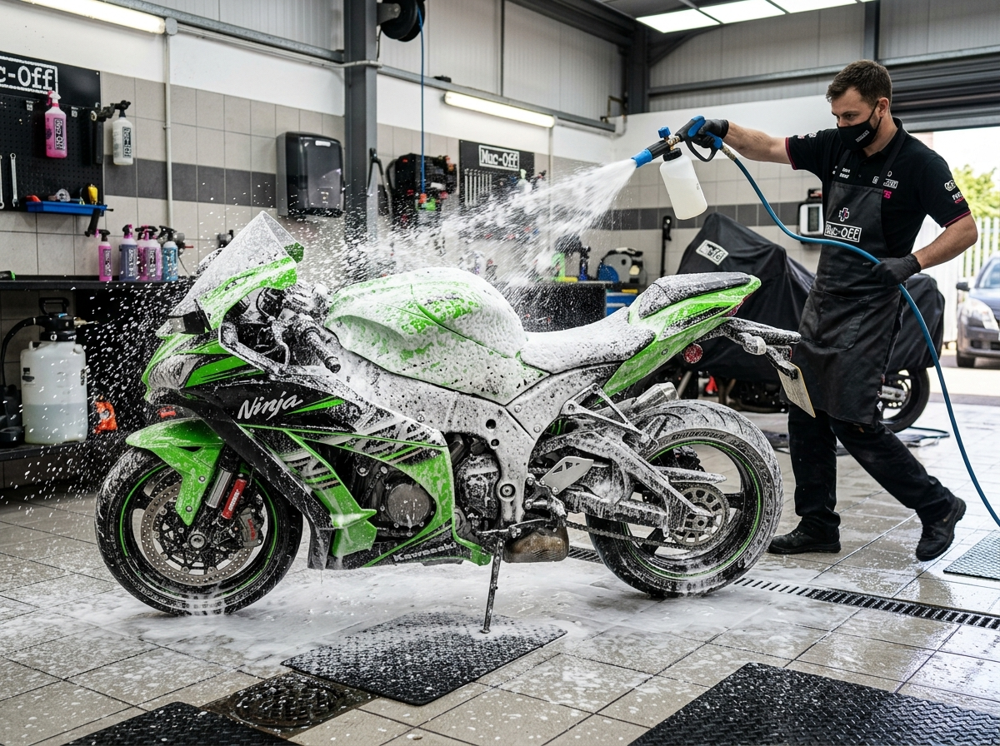
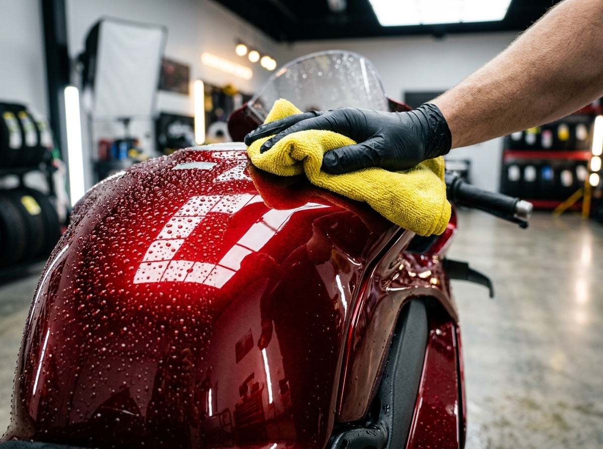

Dokumentasi Pekerjaan
Galeri Hasil Pencucian
Geser penanda pada gambar di bawah ini untuk melihat perbandingan sebelum dan sesudah perawatan.
Geser garis di atas untuk melihat perbedaan sebelum dan sesudah pengerjaan.

